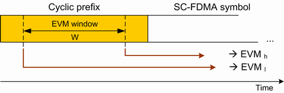
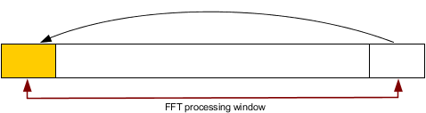

Modulation results are based on a comparison of an ideal reference waveform with the measured signal. The measured signal is corrected by the average frequency and timing offset for each measured subframe.
See also: "Modulation Accuracy"
- The I/Q origin offset must be removed from the evaluated signal before calculating the EVM and the inband emissions.
- The EVM calculation must be based on two different FFT processing windows in the time domain, separated by the "EVM window length" W. The minimum test requirement applies to the larger of the two obtained EVM values.
The definition of the EVM window and the two FFT processing windows is shown below.

The EVM window is centered on the cyclic prefix (CP) at the beginning of the SC-FDMA symbol. Its length is specified in the standard, depending on the channel bandwidth and the CP type (see 3GPP TS 36.101, tables F.5.3-1 and F.5.4-1).
The CP is a cyclic extension of the SC-FDMA symbol. As a consequence, the EVM for a signal with good modulation accuracy is expected to be largely independent of the EVM window size. Differences between EVMh and EVMl are caused, for example, by the effects of time domain windowing of FIR pulse shaping.

EVM window length settings Use the settings in the "EVM Window Length" section to adjust the length of the EVM window ("Config > Measurement Control > Modulation > EVM Window Length"). The minimum value of one FFT symbol means that EVMh equals EVMl. |